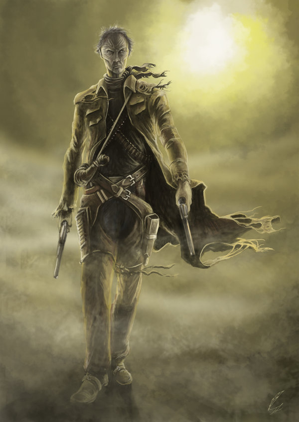

 Роланд Дискейн, Роланд из Гилеада (англ. Roland Deschain of Gilead) — центральный персонаж серии Стивена Кинга о Тёмной Башне. Он, сын Стивена и Габриэль Дискейнов, — последний живой член легендарного (в его мире) ордена стрелков. Его личность была в основном создана с опорой на героев Клинта Иствуда, а цель и некоторые персонажи взяты из поэмы Роберта Браунинга «Чайльд-Роланд дошел до Темной Башни». Роланд является потомком в тридцатом поколении Короля Артура, известного в мире Роланда под именем Артур Эльдский. Даже его револьверы сделаны из переплавленного легендарного меча Артура, Эскалибура. По преданию, для того, чтобы войти в Башню, необходимо обладать этим мечом. Роланд стал стрелком в необыкновенно раннем возрасте — в четырнадцать лет (ему удалось победить своего учителя и наставника Корта). Ученик имел право выбора оружия, и Роланд во многом предопределил победу, выбрав в качестве оружия сокола Давида. Далее Роланд был сразу же отправлен в город Хэмбри (англ. Hambry), находящийся в феоде Мэджис (англ. Mejis). Туда он отправился вместе со своим первым «детским» ка-тетом, состоящим из самого Роланда (под именем Уилл Диаборн) и его друзей Катберта Оллгуда и Алена Джонса. Там он впервые влюбился и потерял свою возлюбленную (Сюзан Дельгадо). Он был захвачен влиянием розового магического шара — одного из тринадцати чародейских кристаллов, называемых «Радугой Мерлина» и представляющих каждый из тринадцати Врат (порталов), охраняемых Стражами, генерирующих 6 Лучей, поддерживающих Башню. Роланд узнал, что его цель — путь к Башне, заглянув в розовый шар.
Если Вас заинтересовала данная серия книг Вы можете купить первую книгу здесь
Для информации о герое прилагаю ссылку на википедию:
Роланд Дискейн| Год | Месяц | Событие |
| 1985 | Июль | Роланду исполнилось 14 лет и он прошел испытание |
| 1985 | Август | Роланд получил назначение в Меджис, куда и направился со своими спутниками |
| 1985 | Август | Роланд впервые познакомился с Сьюзан |
| 1986 | Июнь | Роланд встревает в перепалку между Роем Дипейпом и Шими Руисом в салуне города Хембри |